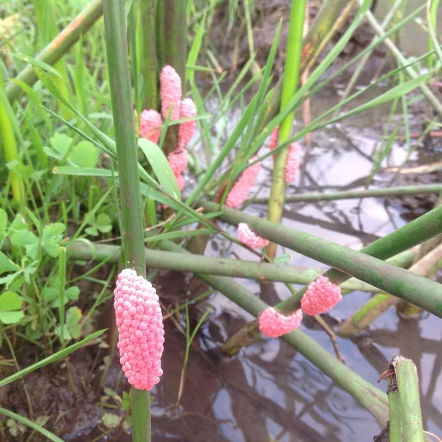

软体动物 · 动物界
小管福寿螺 Pomacea canaliculata

原产南美的淡水螺，繁殖力惊人，被引入中国后成为危害水稻和湿地生态的恶性入侵物种，还是广州管圆线虫的中间宿主。
- 分类
- 门软体动物门纲腹足纲目中腹足目科瓶螺科属福寿螺属
- 栖息环境
- 南方沟渠、稻田、池塘和湿地，喜水流缓慢、水草丰富的浅水
- 地理分布
- 原产南美洲亚马孙河流域，20 世纪 80 年代引入中国，现南方多地扩散
- 保护级别
- 暂无评估；中国未列入国家重点保护野生动物名录（已列为外来入侵物种）
物种志
小管福寿螺的贝壳较大、壳质薄，呈球形或卵圆形，壳面黄褐或绿褐色，带有深色的螺旋纹。壳口宽大，有角质的厣。壳高一般 4–6 cm，最大可超过 8 cm。
小管福寿螺原产南美洲的亚马孙河流域，20 世纪 80 年代被作为食用螺引入中国，后因口感不佳和养殖逃逸而扩散到南方的沟渠、稻田和湿地。它是杂食性动物，食量很大，啃食水稻秧苗、水生植物和藻类，对农业危害很大。小管福寿螺的繁殖力极强，雌螺把粉红色的卵块产在水面以上的植物茎秆、石壁和堤岸上，每个卵块含卵数百粒。它还是广州管圆线虫的中间宿主，生食或未煮熟食用可能感染寄生虫。小管福寿螺被列入中国外来入侵物种名单，多地开展人工清除和防治工作。目前它没有IUCN 的正式评估，中国未将其列入国家重点保护野生动物名录。
形态与习性
- 食性杂食性，食量大，啃食水稻秧苗、水生植物和藻类
- 壳高一般 4–6 cm，最大可超过 8 cm
- 繁殖雌螺把粉红色卵块产在水面以上的植物和堤壁上
- 入侵历史20 世纪 80 年代作为食用螺引入中国，后扩散成灾
- 危害啃食水稻秧苗，是农业上的恶性入侵物种
- 寄生虫广州管圆线虫的中间宿主，食用需彻底煮熟
趣味知识
- 福寿螺把粉红色的卵块产在水面以上的植物和堤壁上，十分醒目。
- 它食量大，会啃食水稻秧苗，是中国南方农业上的恶性入侵物种。
- 福寿螺是广州管圆线虫的中间宿主，食用时必须彻底煮熟。